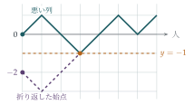

STEP I 2011、第12問
先に進む前に問題を読んでおこう。問題は STEP Support Programme の問題データベースにある： step.maths.org/questions/11-s1-q12
導入
\(\frac{m}{m+1}\)、\(\frac{m-1}{m+1}\)、\(\frac{m-2}{m+1}\) という規則性は見過ごせない。£2 硬貨を持つ人が \(n\) 人いれば、答えはきっと \(\frac{m - n + 1}{m + 1}\) だろう。実際そのとおりであり、最も鮮やかな証明は組合せ論の中でも屈指の美しいアイデア、すなわち鏡像原理（reflection principle）による。これは、図の一部を直線に関して折り返すことで、難しい数え上げ（釣り銭が途中で尽きない列の個数）を易しい数え上げに変えてしまう方法である。
この問題はさまざまな姿で現れる。勝者が一度も相手に後れをとらない開票（1887年のベルトラン（Bertrand）の投票問題）、決して破産しない賭博者、正しく対応する括弧などである。\(m = n\) のとき、この数え上げはカタラン数（Catalan numbers）を与える。カタラン数は、組合せ論において二項係数（binomial coefficients）に次いで最もよく現れる数列といってよいだろう。
取りかかる前に
£1 の客が来るたびに硬貨が1枚増え、£2 の客が来るたびに（釣り銭として）1枚減る。行き詰まるのはどのようなときか。
手元にある £1 硬貨の枚数を追っていく。この枚数は £1 の客ごとに \(1\) 増え、£2 の客ごとに \(1\) 減る。行き詰まるのは、ちょうど硬貨を1枚も持っていないときに £2 の客が来た場合であり、このとき枚数は \(-1\) になってしまう。したがって、成功するための必要十分条件は、列のどの時点においても、それまでの £1 の客の人数がそれまでの £2 の客の人数以上であることである。
順を追って解く
段階 1 £2 硬貨が1枚の場合
\(n = 1\) のとき、失敗するのは £2 の客が先頭にいる場合に限る。£2 の客は \(m + 1\) 個の位置のどこにも等確率でいるから、 \[\mathrm{P}(\text{成功}) = 1 - \frac{1}{m + 1} = \frac{m}{m + 1}. \qed\]
段階 2 £2 硬貨が2枚の場合
先頭の人は £1 硬貨を持っていなければならない。2番目の人については何が起こりうるか。また、それぞれの場合にどのような状況が残るか。
先頭の人が £1 硬貨を持っている確率は \(\frac{m}{m+2}\) であり、そうでなければその場で失敗する。先頭が £1 なら手元に硬貨が1枚あり、残りの列には £1 の人が \(m - 1\) 人、£2 の人が2人いる。
2番目の人が £1 硬貨を持っている場合（確率 \(\frac{m-1}{m+1}\)）、手元の硬貨は2枚になり、2枚の £2 硬貨がいつ来ても釣り銭を渡せる。成功は確実である。
2番目の人が £2 硬貨を持っている場合（確率 \(\frac{2}{m+1}\)）、手元の硬貨は0枚に戻り、£1 の人が \(m - 1\) 人、£2 の人が1人残る。小問 (i) で \(m\) を \(m - 1\) に置き換えれば、成功する確率は \(\frac{m-1}{m}\) である。
よって \[\mathrm{P}(\text{成功}) = \frac{m}{m + 2}\Bigl(\frac{m - 1}{m + 1} + \frac{2}{m + 1}\cdot\frac{m - 1}{m}\Bigr) = \frac{m}{m + 2}\cdot\frac{m - 1}{m + 1}\cdot\frac{m + 2}{m} = \frac{m - 1}{m + 1}. \qed\]
同じ方法を \(n = 3\) で試してみよ。うまくいくが、場合分けが膨れ上がる。成功する列を一度にまとめて数える方法はないだろうか。
段階 3 列を経路として見る
対応した人数に対して手元の硬貨の枚数をグラフに描いてみよ。列はどのような図になるか。成功する列はどのような図になるか。
列は、\(m\) 個の上り段（£1）と \(n\) 個の下り段（£2）からなり、高さ \(0\) から始まって高さ \(m - n\) で終わる経路である。このような経路は \(\binom{m + n}{n}\) 個あり、どれも等確率である。列が成功するのは、その経路が一度も \(0\) より下に行かないときに限る。したがって、数えるべきは悪い経路、すなわち高さ \(-1\) に触れる経路である。
段階 4 折り返し
悪い経路を1つとる。それが初めて \(-1\) に触れる時点を見つけ、その時点より前の部分を直線 \(y = -1\) に関して折り返せ。新しい経路はどこから始まり、どこで終わるか。
折り返した経路は \(-2\)（直線 \(y = -1\) に関する \(0\) の鏡像）から始まり、元の経路と同じ \(m - n\) で終わる（図 9.10.1）。逆に、\(-2\) から \(m - n\) へ向かうどの経路も、どこかで必ず \(y = -1\) を横切る（\(m \geq n\) より、下から始まって上で終わるからである）。初めて \(y = -1\) に達するまでの部分を折り返せば、\(0\) から始まる悪い経路に戻る。したがって、\(0\) から始まる悪い経路は、\(-2\) から \(m - n\) へ向かうすべての経路とちょうど1対1に対応する。
\(-2\) から \(m - n\) へ \(m + n\) 段で進む経路は \(m - n + 2\) だけ上昇するから、上り段が \(m + 1\) 個、下り段が \(n - 1\) 個である。このような経路は \(\binom{m + n}{n - 1}\) 個ある。ゆえに \[\mathrm{P}(\text{失敗}) = \frac{\binom{m + n}{n - 1}}{\binom{m + n}{n}} = \frac{n!\,m!}{(n - 1)!\,(m + 1)!} = \frac{n}{m + 1},\] であり、 \[\mathrm{P}(\text{成功}) = 1 - \frac{n}{m + 1} = \frac{m - n + 1}{m + 1}.\] \(n = 3\) のとき、これは \(\frac{m - 2}{m + 1}\) である。■

振り返り
適切な状態を見つける。 意味をもつのは手元の硬貨の枚数だけであり、これによって列が経路（歩み）に変わった。
最初の数歩で条件づける。 小問 (i) と (ii) は、最初の数人がどうするかを考えて、より小さな場合に帰着させることで解いた。
全単射で余事象を数える。 悪い経路を直接数えるのは難しかったが、折り返しによって、数えやすい集合と全単射（bijection）で対応づけることができた。
背後にある数学
カタラン数
\(m = n\)（£1 硬貨がぎりぎり足りる場合）のとき、成功する列の個数は \[\binom{2n}{n} - \binom{2n}{n - 1} = \frac{1}{n + 1}\binom{2n}{n},\] であり、これは第 \(n\) カタラン数 \(C_n\)：\(1, 1, 2, 5, 14, 42, 132, \ldots\) である。リチャード・スタンレー（Richard Stanley）の著書 Catalan Numbers には、カタラン数が数える対象が200以上も挙げられている。その中には、\(n\) 組の括弧を正しく並べる方法の数（「\((())()\)」はよいが「\(())(()\)」はだめである。これは「\((\)」を £1、「\()\)」を £2 とみれば硬貨の議論そのものである）、\(n + 2\) 角形を互いに交わらない対角線で三角形に分割する方法の数、\(n + 1\) 個の因数の積に括弧をつける方法の数などがある。
ランダムウォーク
列はランダムウォーク（random walk）であり、鏡像原理はランダムウォークを調べるための基本的な道具の1つである。たとえば鏡像原理から、\(0\) から出発する公平なランダムウォークはいつか必ず \(0\) に戻ること、また最初の \(2n\) 歩の間ずっと正であり続ける確率が \(\frac{1}{2}\binom{2n}{n}2^{-2n} \approx \frac{1}{2\sqrt{\pi n}}\) であることがわかる。連続版では、同じ折り返しの議論をブラウン運動（Brownian motion）に適用すると、その最大値の分布が得られる。これは、株価がある障壁を一度でも越えるかどうかで支払いが決まる、ある種の金融オプションの価格づけの基礎になっている。
1887年、ジョゼフ・ベルトラン（Joseph Bertrand）は次の問いを立てた。候補者 \(A\) が \(a\) 票、\(B\) が \(b < a\) 票を得る選挙において、開票の間ずっと \(A\) が真に \(B\) をリードしている確率はいくらか。答え \(\frac{a - b}{a + b}\) は同じ年にデジレ・アンドレ（Désiré André）によって証明され、その議論は通常、鏡像原理として記憶されている（ただし歴史家たちは、アンドレの実際の証明は少し異なる全単射を用いていたと指摘している）。本問のくじ引きの問題は、同点を許す変形版である。すなわち成功とは、£1 の人数が £2 の人数を一度も下回らないことである。演習問題の1つで、ベルトランの答えを本問の答えから導く。
思考のスキル
ある集合の要素を数えるには、数えられる集合との1対1対応を見つけよ。
折り返しによって、悪い列を、別の始点から出発する制約のない経路と対応づけた。全単射による証明は組合せ論で最も満足感のある証明である。2つの数が等しいことを単に示すだけでなく、なぜ等しいのかを説明してくれるからである。大学では組合せ論のいたるところで全単射による証明に出会い、ランダムウォークやブラウン運動の研究で再び鏡像原理に出会うだろう。
次の一歩
3枚の場合を場合分けで。 小問 (ii) と同様に、列の最初の数人で条件づけて小問 (iii) を証明せよ。鏡像原理がどれほどの手間を省いてくれるかがわかるだろう。
ベルトランの投票問題。 ある選挙で \(A\) は \(a\) 票、\(B\) は \(b < a\) 票を得る。開票の間ずっと \(A\) が真にリードしている確率が \(\frac{a - b}{a + b}\) であることを示せ。（ヒント：最初の1票は \(A\) でなければならない。その後、\(A\) が \(B\) に後れをとる差は決して…を超えてはならない。）
括弧。 3組の括弧の正しい並べ方 \(5\) 通りと、五角形を三角形に分割する方法 \(5\) 通りをすべて書き出せ。両者の間の全単射を見つけられるか。
£5 紙幣。 価格 £1 のチケットを買う列に、£1 硬貨を持つ人が \(m\) 人、£5 紙幣を持つ人が \(n\) 人いる。鏡像原理ではもはや簡単な答えが得られない理由を説明せよ。（この一般化ははるかに難しい。）
さらに学ぶために
ウィリアム・フェラー（William Feller）, An Introduction to Probability Theory and Its Applications, Vol. 1（Wiley）、第III章。ランダムウォークと鏡像原理についての古典的な解説。
Richard Stanley, Catalan Numbers（Cambridge University Press）。200を超える解釈を演習問題とともに収録。
Marc Renault, 「Lost (and found) in translation: André’s actual method and its application to the generalized ballot problem」, American Mathematical Monthly 115 (2008)。鏡像原理の歴史。